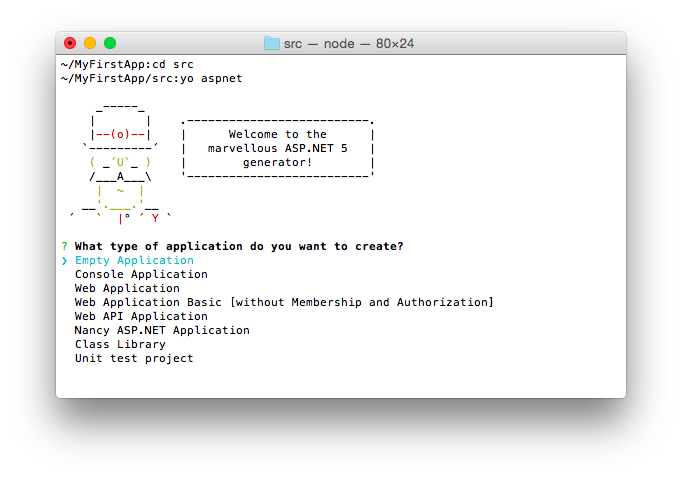
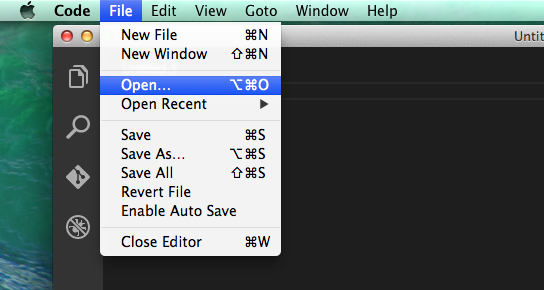
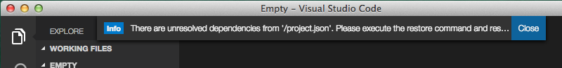
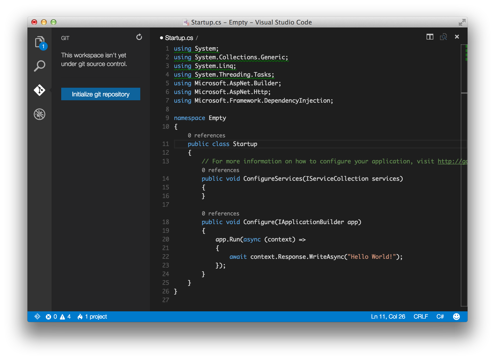
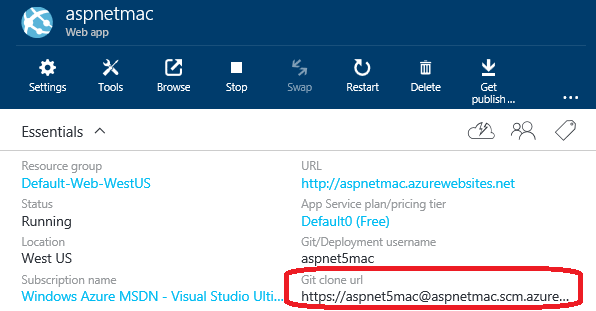
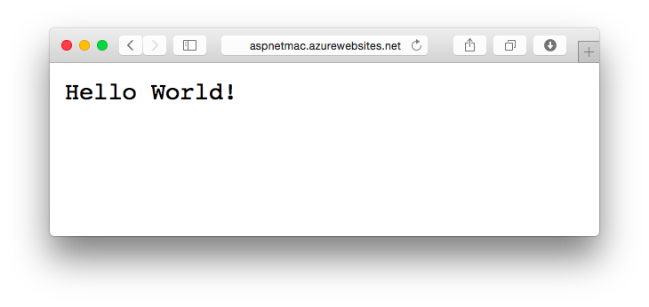

Your First ASP.NET 5 Application on a Mac¶
ASP.NET 5 is cross-platform and can be developed and run on Mac OS X as well as Linux and Windows. See how you can quickly install, scaffold, run, debug, and deploy ASP.NET applications on a Mac.
- In this article:
Setting Up Your Development Environment¶
First, make sure you have installed ASP.NET on your Mac OS X machine. This step will include installing the .NET Execution Environment (DNX) and the .NET Version Manager (DNVM). You can check which DNX version you have active by running dnvm list.
Scaffolding Applications Using Yeoman¶
You can quickly scaffold a new ASP.NET 5 or DNX application on a Mac using Yeoman.
First install Yeoman by following the instructions on the Yeoman site.
Install the OmniSharp ASP.NET generators by running:
npm install -g generator-aspnet
Create a folder for your solution and then add an src subfolder for your project source code.
In your solution folder add a global.json file to indicate the DNX version:
1 2 3 4 5 | {
"sdk": {
"version": "1.0.0-beta7"
}
}
|
From your src folder run the aspnet generator:
yo aspnet
For the purposes of this tutorial select Empty Application to create an empty ASP.NET 5 app.
Developing ASP.NET Applications on a Mac With Visual Studio Code¶
Now, install Visual Studio Code from https://code.visualstudio.com. The first time you run Visual Studio Code should see a welcome screen:

To get started with your first ASP.NET application on a Mac, select File -> Open and choose the folder with your ASP.NET application.
Visual Studio Code may detect that you need to restore dependencies, as shown in this screenshot:
From a Terminal / bash prompt, run dnu restore to restore the project’s dependencies. Alternately, you can press command shift p and then type >d as shown:
This will allow you to run commands directly from within Visual Studio Code, including dnu restore and any commands defined in project.json.
At this point, you should be able to host and browse to this simple ASP.NET web application, which we’ll see in a moment.
This empty project template simply displays “Hello World!”. Open Startup.cs in Visual Studio Code to see how this is configured:
If this is your first time using Visual Studio Code (or just Code for short), note that it provides a very streamlined, fast, clean interface for quickly working with files, while still providing tooling to make writing code extremely productive.
- In the left navigation bar, there are four icons, representing four viewlets:
- Explore
- Search
- Git
- Debug
The Explore viewlet allows you to quickly navigate within the folder system, as well as easily see the files you are currently working with. It displays a badge to indicate whether any files have unsaved changes, and new folders and files can easily be created (without having to open a separate dialog window). You can easily Save All from a menu option that appears on mouse over, as well.
The Search viewlet allows you to quickly search within the folder structure, searching filenames as well as contents.
Code will integrate with Git if it is installed on your system. You can easily initialize a new repository, make commits, and push changes from the Git viewlet.
The Debug viewlet supports interactive debugging of applications. Currently only node.js and mono applications are supported by the interactive debugger.
Finally, Code’s editor has a ton of great features. You should note right away that several using statements are underlined, because Code has determined they are not necessary. Note that classes and methods also display how many references there are in the project to them. If you’re coming from Visual Studio, Code includes many of the keyboard shortcuts you’re used to, such as command k c to comment a block of code, and command k u to uncomment.
Running Locally Using Kestrel¶
The sample we’re using is configured to use Kestrel as its web server. You can see it configured in the project.json file, where it is specified as a dependency and as a command.
1 2 3 4 5 6 7 8 9 10 11 12 13 14 15 16 | {
"webroot": "wwwroot",
"version": "1.0.0-*",
"dependencies": {
"Microsoft.AspNet.Server.IIS": "1.0.0-beta7",
"Microsoft.AspNet.Server.WebListener": "1.0.0-beta7",
"Microsoft.AspNet.Server.Kestrel": "1.0.0-beta7"
},
"commands": {
"kestrel": "Microsoft.AspNet.Hosting --server Microsoft.AspNet.Server.Kestrel --config hosting.ini",
"web": "Microsoft.AspNet.Hosting --server Microsoft.AspNet.Server.WebListener --config hosting.ini"
},
// more deleted
}
|
Run the dnx . kestrel command to launch the web application locally:
Navigate to localhost:5000 (as specified in hosting.ini) and you should see:
To stop the web server once you’ve started it simply press Ctrl+C.
We can update the application to output information to the console whenever a request is received. Update the Configure method as follows:
1 2 3 4 5 6 7 8 | public void Configure(IApplicationBuilder app)
{
app.Run(async (context) =>
{
Console.WriteLine("Request for " + context.Request.Path);
await context.Response.WriteAsync("Hello World!");
});
}
|
Save the file and restart the web server. Make a few requests to the URL. You should see the request information output in the Terminal window (recall that most browsers will automatically attempt to request a favicon.ico file when making a request to a new domain):
As you can see, it’s quite straightforward, especially if you’re already familiar with command line tooling, to get started building ASP.NET applications using Visual Studio Code on Mac OS X.
Publishing to Azure¶
Once you’ve developed your application, you can easily use the Git integration built into Visual Studio Code to push updates to production, hosted on Microsoft Azure.
Initialize Git¶
First, if you haven’t already done so, initialize Git in the folder you’re working in. Simply click on the Git viewlet and click the Initialize Git repository button.
Add a commit message as shown in the image above, and press enter or click the checkmark icon to commit the staged files. Now Git is tracking changes, so if you make an update to a file, the Git viewlet will display how many files have changed since your last commit.
Initialize Azure Website¶
You can deploy to Azure Web Apps directly using Git. Azure also supports other publishing workflows, but being able to simply perform a git push to a remote can be a very convenient way to make updates.
First, create a new Web App in Azure. If you don’t have an Azure account, you can create a free trial.
Next, configure the Web App in Azure to support continuous deployment using Git.
Note the Git URL for the Web App from the Azure portal:
In a Terminal window, add a remote named azure with the Git URL you noted previously, and then perform git push azure master to deploy. You should see output similar to the following:
Now you can browse to your Web App and you should see your newly deployed application.
At this point, you can make additional changes to the application, commit them, and whenever you’re ready to deploy, simply perform another git push azure master from a Terminal prompt. To demonstrate, let’s update the message being printed:
1 2 3 4 5 6 7 8 | public void Configure(IApplicationBuilder app)
{
app.Run(async (context) =>
{
Console.WriteLine("Request for " + context.Request.Path);
await context.Response.WriteAsync("Hello Azure from ASP.NET 5 and Visual Studio Code!");
});
}
|
Save the changes. Commit them using the git viewlet. Run git push azure master from a Terminal prompt, once more. Then refresh your browser:
Summary¶
ASP.NET 5 and DNX support installation on Mac OS X. Developers can quickly install the necessary tools to get started, including Yeoman for app scaffolding and Visual Studio Code for rapid lightweight editing with built-in support for debugging, Git integration, and IntelliSense.